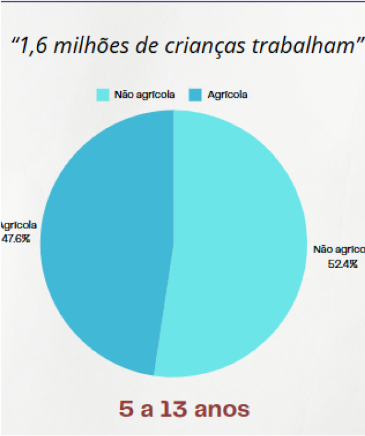
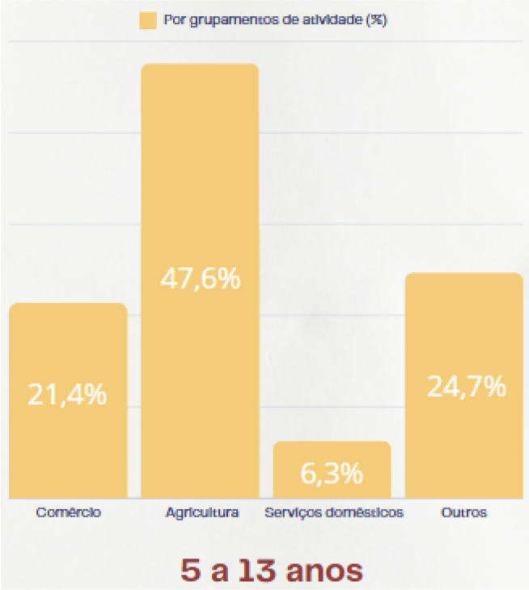

O trabalho infantil no Brasil é um problema que viola os direitos de crianças e adolescentes,
prejudicando seu desenvolvimento e acesso à educação. Embora a Constituição e o ECA proíbam o trabalho antes dos
16 anos, muitas crianças ainda são exploradas em atividades perigosas. Isso afeta sua saúde e limita suas
oportunidades futuras, perpetuando ciclos de pobreza.
Idade mínima: No Brasil, o trabalho é permitido apenas a partir dos 16 anos, com exceção de atividades como
aprendizagem a partir dos 14 anos (seguindo normas específicas).
Trabalho perigoso, insalubre ou noturno: Só é permitido a partir dos 18 anos.
Exemplos de Trabalho Infantil
Trabalho rural: Colheita de frutas, cana-de-açúcar, café, entre outros.
Trabalho doméstico: Cuidar de crianças, limpeza, cozinhar em casas de terceiros.
Trabalho urbano informal: Vender produtos nas ruas, atuar como flanelinha ou carregar mercadorias.
Exploração sexual infantil: Uma das formas mais graves de trabalho infantil.
Trabalho em fábricas ou oficinas clandestinas: Submetendo crianças a condições perigosas.
Dados de pesquisa
-1,3 milhões de crianças se encontra em
estado de trabalho infantil.
-Maioria são meninos com idade entre 14
á 17 anos.
-Suas principais causas são a pobreza, a
cultura e a desinformação.
-Os maiores impactos são a saúde, a falta
dos estudos e o desenvolvimento
Como combater
Fortalecimento de políticas públicas:
Criação e implementação de programas governamentais para prevenir e erradicar o trabalho infantil.
Educação de qualidade:
Garantir acesso a escolas bem estruturadas, com professores capacitados e currículos que estimulem o
desenvolvimento infantil.
Apoio às famílias:
Oferecer assistência social, programas de geração de renda e acesso a serviços básicos para reduzir a
vulnerabilidade econômica.
Campanhas de conscientização:
Informar e sensibilizar a sociedade sobre os impactos do trabalho infantil e a importância de proteger os
direitos das crianças.
Dados do infográfico


O trabalho infantil no Brasil diminuiu
em 2023, em relação a 2022, e
atingiu o menor nível da série
histórica.
Apesar de um aumento significativo
de 2016 à 2022, o índice voltou a
cair, sendo 4,9% em 2022 e 4,2% em
2023 (faixa etária). A queda foi
atribuída à melhora da economia e
ao aumento do Bolsa Família.
Crianças que trabalham como
escravos muitas vezes não sabem
que estão nessa situação, sendo
relacionado a não estudarem e não
terem o acesso à internet para
saberem que não estão contidos nos
Direitos Humanos.
As regiões Nordeste e Sudeste
registram as maiores taxas de
ocupação, respectivamente 33% e
28,8% dos 1,6 milhões de meninas e
meninos trabalhando.